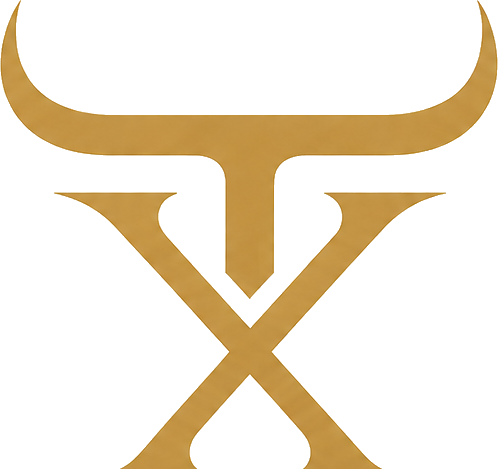
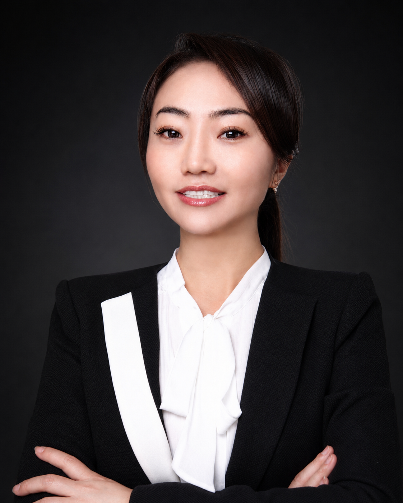

Taurux Group is a private holding group rooted in Quebec, focused on platform building, resource integration, strategic partnerships, and long-term business development across hospitality, private membership, wealth stewardship, media, and education.

Taurux Group brings together businesses, people, capital, and ideas under one shared conviction: genuine value — created for partners, clients, and communities — is the foundation of everything lasting.
Through deep roots in both Canadian and Chinese business communities, Taurux Group gives partners access to a Canada–China business network that combines local credibility, international resources, strategic relationships, and development capability.
Each business inside Taurux Group is distinct in its market, yet connected by the same platform of resources, relationships, and long-term values.
Our track record is built through real operations, trusted relationships, and the discipline to turn ideas into durable platforms.
Taurux Group is led with complementary strengths: strategic direction, disciplined execution, and long-term relationship building.
